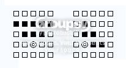

Guardian

Piercing Mastery JobLv.3
- Passive
- เพิ่ม ATK Hit และโอกาส Critical (หอกทุกชนิด เรเปีย) มีผลซ้อนทับกับ Mastery ในคลาสแรกๆ
Weapon require : 1H Spear, 2H Spear, Rapier
Can learn at : JobLV. 3
Detail : สกิลเลเวล 1 เพิ่ม Atk 30, S.Hit 16 และเพิ่มคริติคอล 3 เมื่อถืออาวุธประเภทหอก หรือดาบแทง
สกิลเลเวล 2 เพิ่ม Atk 45, S.Hit 22 และเพิ่มคริติคอล 6 เมื่อถืออาวุธประเภทหอก หรือดาบแทง
สกิลเลเวล 3 เพิ่ม Atk 60, S.Hit 28 และเพิ่มคริติคอล 9 เมื่อถืออาวุธประเภทหอก หรือดาบแทง
สกิลเลเวล 4 เพิ่ม Atk 75, S.Hit 34 และเพิ่มคริติคอล 12 เมื่อถืออาวุธประเภทหอก หรือดาบแทง
สกิลเลเวล 5 เพิ่ม Atk 90, S.Hit 40 และเพิ่มคริติคอล 15 เมื่อถืออาวุธประเภทหอก หรือดาบแทง

DEF Communion JobLv.6
- เพิ่ม DEF ของผู้เล่นในปาร์ตี้รวมถึงตัวเอง ในช่วงเวลาที่กำหนด
Skill Type : Party Buff
Range :Weapon require : None
Can learn at : JobLV. 6
Detail : สกิลเลเวล 1 เพิ่ม DEF ขวา 98 ใช้ SP 100 ใช้เวลาร่าย 4 Sec ดีเลย์ 2 Sec ระยะเวลาแสดงผล 600 Sec
สกิลเลเวล 2 เพิ่ม DEF ขวา 128 ใช้ SP 100 ใช้เวลาร่าย 4 Sec ดีเลย์ 2 Sec ระยะเวลาแสดงผล 600 Sec
สกิลเลเวล 3 เพิ่ม DEF ขวา 158 ใช้ SP 100 ใช้เวลาร่าย 4 Sec ดีเลย์ 2 Sec ระยะเวลาแสดงผล 600 Sec
สกิลเลเวล 4 เพิ่ม DEF ขวา 188 ใช้ SP 100 ใช้เวลาร่าย 4 Sec ดีเลย์ 2 Sec ระยะเวลาแสดงผล 600 Sec
สกิลเลเวล 5 เพิ่ม DEF ขวา 218 ใช้ SP 100 ใช้เวลาร่าย 4 Sec ดีเลย์ 2 Sec ระยะเวลาแสดงผล 600 Sec

Guardian JobLv.10
- ในระหว่างผลของสกิล จะเพิ่ม DEF MDEF แต่เมื่อขยับ จะเป็นการยกเลิกผล
Skill Type : Self Buff
Weapon require : None
Can learn at : JobLV. 10
Detail : สกิลเลเวล 1 เพิ่ม DEF, M.DEF ขวา 50% เพิ่ม M.Resist 100% ใช้ SP 32 ระยะเวลาแสดงผล 60 Sec
สกิลเลเวล 2 เพิ่ม DEF, M.DEF ขวา 55% เพิ่ม M.Resist 100% ใช้ SP 42 ระยะเวลาแสดงผล 90 Sec
สกิลเลเวล 3 เพิ่ม DEF, M.DEF ขวา 60% เพิ่ม M.Resist 100% ใช้ SP 52 ระยะเวลาแสดงผล 120 Sec
สกิลเลเวล 4 เพิ่ม DEF, M.DEF ขวา 70% เพิ่ม M.Resist 100% ใช้ SP 62 ระยะเวลาแสดงผล 150 Sec
สกิลเลเวล 5 เพิ่ม DEF, M.DEF ขวา 80% เพิ่ม M.Resist 100% ใช้ SP 72 ระยะเวลาแสดงผล 180 Sec
Remark : ไม่มีการร่าย ไม่มีดีเลย์, ไม่สามารถใช้ขณะ Possession
Increased hostility JobLv.13
- Passive
- เพิ่มค่า Hate ของตนเองให้สูงขึ้น
Range :Weapon require :Can learn at : JobLV. 13
Detail : Reflect Shield JobLv.20
- Passive
- เมื่อสวมโล่ มีโอกาสสะท้อนเวทย์ได้
Weapon require : Shield
Can learn at : JobLV. 20
Detail : สกิลเลเวล 1 มีโอกาสสะท้อนเอฟเฟคของเวทย์มนต์ 10%
สกิลเลเวล 2 มีโอกาสสะท้อนเอฟเฟคของเวทย์มนต์ 20%
สกิลเลเวล 3 มีโอกาสสะท้อนเอฟเฟคของเวทย์มนต์ 30%
สกิลเลเวล 4 มีโอกาสสะท้อนเอฟเฟคของเวทย์มนต์ 40%
สกิลเลเวล 5 มีโอกาสสะท้อนเอฟเฟคของเวทย์มนต์ 50%

Aegis JobLv.23
- เมื่อใช้งาน ค่า DEFหน้า กับ ค่าMDEFหน้า สลับกันได้
Skill Type : Self Buff
Weapon require : None
Can learn at : JobLV. 23
Detail : ไม่สามารถใช้ขณะ Possession
สกิลเลเวล 1 ใช้ SP 40 ใช้เวลาร่าย 1.5 Sec ไม่มีดีเลย์ ระยะเวลาแสดงผล 45 Sec
สกิลเลเวล 2 ใช้ SP 40 ใช้เวลาร่าย 1.4 Sec ไม่มีดีเลย์ ระยะเวลาแสดงผล 60 Sec
สกิลเลเวล 3 ใช้ SP 40 ใช้เวลาร่าย 1.3 Sec ไม่มีดีเลย์ ระยะเวลาแสดงผล 75 Sec
สกิลเลเวล 4 ใช้ SP 40 ใช้เวลาร่าย 1.2 Sec ไม่มีดีเลย์ ระยะเวลาแสดงผล 90 Sec
สกิลเลเวล 5 ใช้ SP 40 ใช้เวลาร่าย 1.0 Sec ไม่มีดีเลย์ ระยะเวลาแสดงผล 120 Sec

Soul Protection JobLv.25
- จะสามารถป้องกันท่าปลดสิง ได้ 1 ครั้ง
Skill Type : Self Buff
Weapon require : None
Can learn at : JobLV. 25
Detail : สกิลเลเวล 1 ใช้ SP 50 ระยะเวลาแสดงผล 35 Sec
สกิลเลเวล 2 ใช้ SP 65 ระยะเวลาแสดงผล 55 Sec
สกิลเลเวล 3 ใช้ SP 80 ระยะเวลาแสดงผล 75 Sec
สกิลเลเวล 4 ใช้ SP 95 ระยะเวลาแสดงผล 95 Sec
สกิลเลเวล 5 ใช้ SP 110 ระยะเวลาแสดงผล 115 Sec

Impact Shield JobLv.30
- ใช้โล่ กระแทกไปยังเป้าหมาย มีโอกาสทำให้ติดสตัน
Skill Type : Attack front direction area (Physic Damage - )
Range : 
Weapon require : Shield
Can learn at : JobLV. 30
Detail : สกิลเลเวล 1 ความแรง 220% ทำให้ติดสถานะ Stun 3 Sec ใช้ SP 20 ใช้เวลาร่าย 2.0 Sec ดีเลย์ 1.0 Sec คูลดาวน์ 10 Sec
สกิลเลเวล 2 ความแรง 245% ทำให้ติดสถานะ Stun 3 Sec ใช้ SP 25 ใช้เวลาร่าย 1.75 Sec ดีเลย์ 0.875 Sec คูลดาวน์ 10 Sec
สกิลเลเวล 3 ความแรง 270% ทำให้ติดสถานะ Stun 3 Sec ใช้ SP 30 ใช้เวลาร่าย 1.5 Sec ดีเลย์ 0.75 Sec คูลดาวน์ 10 Sec
สกิลเลเวล 4 ความแรง 295% ทำให้ติดสถานะ Stun 3 Sec ใช้ SP 35 ใช้เวลาร่าย 1.25 Sec ดีเลย์ 0.625 Sec คูลดาวน์ 10 Sec
สกิลเลเวล 5 ความแรง 320% ทำให้ติดสถานะ Stun 3 Sec ใช้ SP 40 ใช้เวลาร่าย 1.0 Sec ดีเลย์ 0.5 Sec คูลดาวน์ 10 Sec
Remark : โอกาสทำให้ติดสถานะ 100% และมีโอกาสที่จะลดสเตตัส AGI, STR, DEX ศัตรูลง


Spiral Spear JobLv.35
- พุ่งหอกออกไปสู่เป้าหมาย มีผลเป็นวงกว้าง ทั้งมีโอกาสทำให้เกิดอาการเกร็ง
Skill Type : Target Single Enemy and Area 3*3
Range :Weapon require : 1H Spear, 2H Spear, Rapier
Can learn at : JobLV. 35
Detail : สกิลเลเวล 1 ความแรง 150% จำนวน 4 ฮิต ใช้ SP 20 ใช้เวลาร่าย 2 วินาที ดีเลย์ 1.5 วินาที
สกิลเลเวล 2 ความแรง 170% จำนวน 4 ฮิต ใช้ SP 25 ใช้เวลาร่าย 1.75 วินาที ดีเลย์ 1.4 วินาที
สกิลเลเวล 3 ความแรง 190% จำนวน 5 ฮิต ใช้ SP 30 ใช้เวลาร่าย 1.5 วินาที ดีเลย์ 1.3 วินาที
สกิลเลเวล 4 ความแรง 210% จำนวน 8 ฮิต ใช้ SP 35 ใช้เวลาร่าย 1.25 วินาที ดีเลย์ 1.2 วินาที
สกิลเลเวล 5 ความแรง 230% จำนวน 12 ฮิต ใช้ SP 40 ใช้เวลาร่าย 1 วินาที ดีเลย์ 1 วินาที
Remark : ไม่สามารถใช้ตอน Possession ได้


Strong Body JobLv.40
- เพิ่ม DEFหน้า และเพิ่ม MAX HP แก่สมาชิกโดยรอบตนเอง (5*5)

Blocking JobLv.45
- ในระหว่างผลของสกิล เมื่อสวมโล่ จะลดความเสียหาย ทั้งยังมีโอกาสทำให้เกิดสตัน